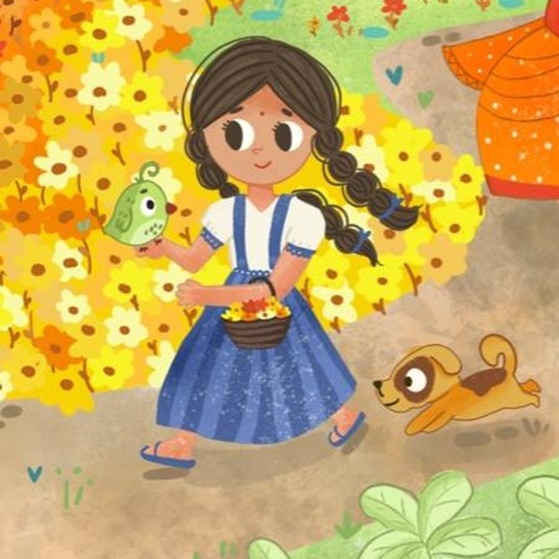
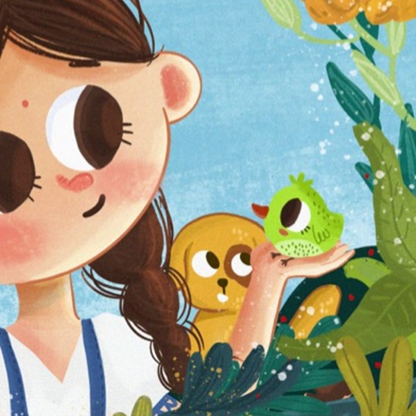
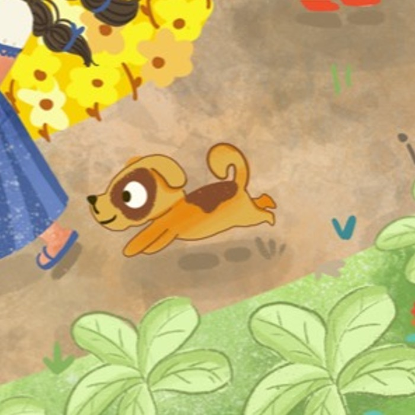
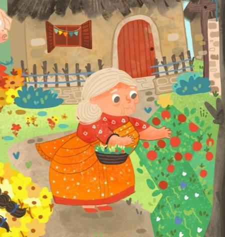

Swarna and the magical forest is a collection of children's fiction stories about a small girl and her adventures in the magical forest. The simplicity of the charecters and the story makes it an ideal bed time read for children. Let us get introduced to some of the charecters -

Also known as Tara, is a naughty 6 year old who is brave and fearless. She is a kind and lonely child who believes that there is good in everyone. She sees the world with eyes of wonder, and therefore finds friends wherever she goes.
But does that stop her from having a notorious encounter with the most dreaded witch Kalika, who is known to take childern away to her pale and mysterious den. Know More

Chiku is one of Swarna's two permanent companions, he is a lively talking bird. Swarna has no idea what kind of bird he is.
Ajji had found it as a tiny baby, fallen from its nest on a tall tree near the forest. Ajji has nursed it and taken care of it since.
Since the bird could talk, Ajji said it was a magical bird. Chiku is both extra talkative and equally cowardly. He's ready to take off at hint of the slightest danger.

Is a tiny pup, he is the other creature who is always by her side. He is small but has the heart of a lion. He shares Swarna's love for exploring new places, and is often the cause of them to discover a new place or have an adventure.

Ajji (grandma in Kannada) is a loving old lady, who is the sole human companion for Swarna. Ajji has taken care of Swarna since she was a baby. Though Ajji is poor and uneducated, she has taught Swarna the most valuable lessons in life.
Ajji never taught Swarna what girls should or couldn't do. So Swarna fearlessly goes into the most dreaded place in the whole kingdom - the magical forest of Swarnaarayanya.